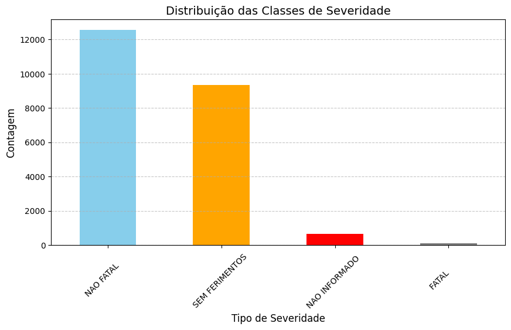
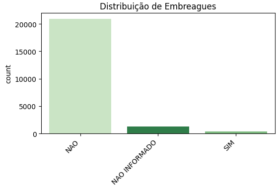

Previsão de Acidentes de Trânsito no Brasil: Análise de Dados do DETRAN 2020
O Problema: Os acidentes de trânsito são uma das principais causas de mortes no Brasil, representando um grave problema de saúde pública e segurança viária. Em 2020, o Brasil registrou milhares de acidentes, com uma grande variedade de fatores envolvidos, desde condições climáticas até comportamentos dos condutores. A complexidade desses eventos exige uma análise mais aprofundada para identificar padrões, prever cenários e, o mais importante, prevenir futuras tragédias.
O Que Estamos Propondo: Neste projeto, buscamos explorar e analisar dados de acidentes de trânsito do DETRAN 2020 com o objetivo de desenvolver modelos preditivos capazes de prever a severidade dos acidentes. Através da análise de fatores como condições dos veículos, comportamento dos condutores, e características dos acidentes, queremos criar soluções que possam ajudar na tomada de decisões para reduzir o número de vítimas no trânsito.
Importante: As previsões realizadas por nosso modelo são baseadas em dados históricos e estatísticas, e não devem ser interpretadas como um diagnóstico final. Assim como em diagnósticos médicos, as previsões podem sugerir tendências, mas não substituem a análise especializada. Este projeto visa apoiar políticas públicas e estratégias de prevenção, e não determinar o que ocorrerá em um cenário específico.
Graficamente:
- Categorias de gravidade dos acidentes mostrando o desbalanceamento da base em favor dos casos "Não Fatal".
Distribuição de Severidade dos Acidentes
 - O não uso de cinto de segurança está associado a acidentes mais graves.
Relação entre Uso de Cinto de Segurança e Gravidade dos Acidentes

- Embriguez ao volante, embora pouco frequente, agrava os acidentes.
Impacto da Embriaguez no Aumento da Gravidade dos Acidentes

Nosso Modelo Preditivo:
- Análise Exploratória de Dados (EDA):Estudo aprofundado dos dados para identificar padrões e correlacionar variáveis.
- Modelagem Preditiva:Utilização de técnicas de machine learning como Random Forest, XGBoost e outras para prever a severidade dos acidentes.
- Fatores de Risco:Identificação dos principais fatores que aumentam a gravidade dos acidentes.
Conclusão
O Caminho Para a Redução de Acidentes: Com base nas análises e modelos desenvolvidos, nosso objetivo é fornecer informações valiosas para autoridades de trânsito e pesquisadores. O projeto não só revela os padrões de acidentes como também aponta recomendações para melhorar a segurança viária. Através da combinação de dados históricos e insights preditivos, esperamos contribuir com políticas públicas e estratégias mais eficazes.